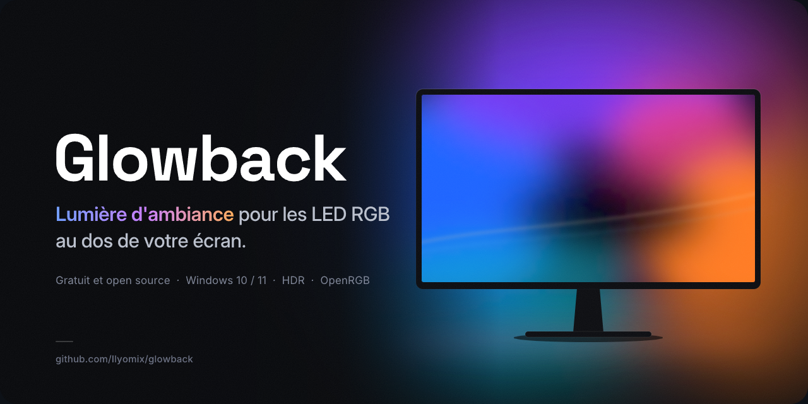

La lumière d'ambiance pour les écrans avec LED RGB à l'arrière
Glowback fait suivre à chaque LED au dos de votre écran la partie de l'image juste devant elle, en temps réel. Il fonctionne avec tout appareil Éclairage dynamique de Windows 11 ou OpenRGB. C'est gratuit et open source, sans ruban LED, caméra ni logiciel constructeur.
Pourquoi Glowback
Une zone par LED
Chaque LED suit le bord de l'image juste devant elle, grâce aux positions fournies par l'appareil.
Films, jeux, HDR
La capture GPU voit la vidéo et les jeux en plein écran, gère le HDR et ignore les bandes noires.
Une vraie appli Windows
Installateur, menu Démarrer, lancement au démarrage, menu sombre avec l'état en direct, désinstallation propre.
Toujours à jour
Mises à jour signalées (désactivables), 6 langues, environ 0,5 ms de CPU par image.
Installation en une minute
- Branchez le câble USB montant de l'écran au PC.
- Dans Paramètres → Personnalisation → Éclairage dynamique, désactivez « Utiliser l'éclairage dynamique sur mes appareils » pour votre écran.
- Téléchargez GlowbackSetup.exe et suivez l'assistant. Glowback apparaît près de l'horloge.
Pour désinstaller : Paramètres → Applications → Applications installées → Glowback → Désinstaller.
Mon écran est-il compatible ?
- Il apparaît dans Paramètres → Personnalisation → Éclairage dynamique : ✅ Glowback le pilote.
- Il est pris en charge par OpenRGB : ✅ lancez le serveur SDK d'OpenRGB, Glowback le trouve tout seul.
- Ni l'un ni l'autre : 🛠️ ajoutez un ruban LED avec une carte RP2040 à 5 $ (guide DIY, en anglais).
Testé à ce jour : AOC AGON PRO AG276QZD2 (47 LED). Signalez votre écran pour l'ajouter.
FAQ
Quels écrans sont compatibles ?
Tout écran dont l'éclairage RGB arrière peut être contrôlé par l'Éclairage dynamique de Windows ou par OpenRGB. Lancez glowback --list, ou cherchez votre écran dans Paramètres → Personnalisation → Éclairage dynamique.
Comment synchroniser l'éclairage RGB de mon écran avec l'image ?
Installez Glowback et désactivez l'Éclairage dynamique de Windows pour l'écran : les LED suivent ensuite l'image automatiquement.
Peut-on avoir une lumière d'ambiance synchronisée sans ruban LED ?
Oui, si l'écran a déjà des LED RGB au dos que l'Éclairage dynamique de Windows ou OpenRGB peut contrôler. Sinon, le guide DIY en ajoute pour une dizaine d'euros.
Ça marche en HDR, dans les jeux et les films en plein écran ?
Oui. La capture GPU (DXGI) gère les jeux plein écran, les lecteurs vidéo et le HDR, et ignore les bandes noires. Les flux protégés par DRM sont en général masqués par Windows pour tous les outils de capture.
Comment désinstaller Glowback ?
Paramètres → Applications → Applications installées → Glowback → Désinstaller. Les LED reprennent l'effet de l'appareil.